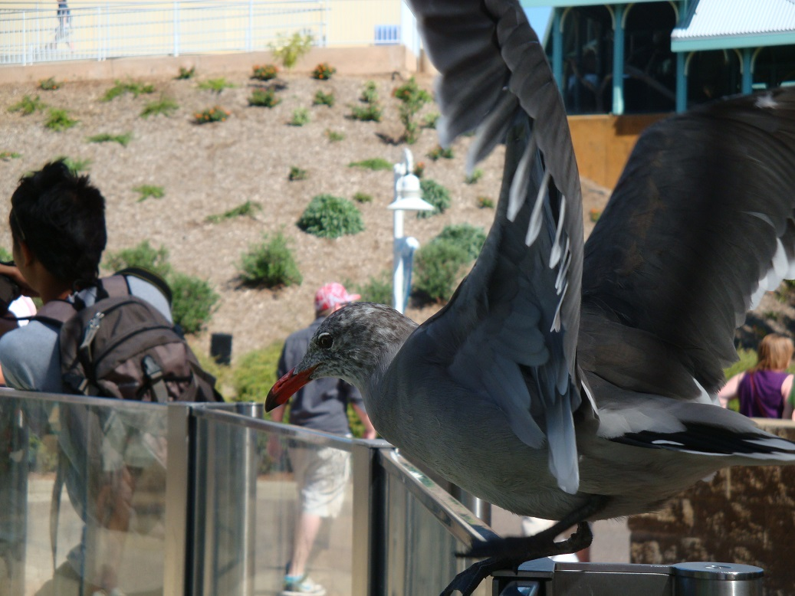
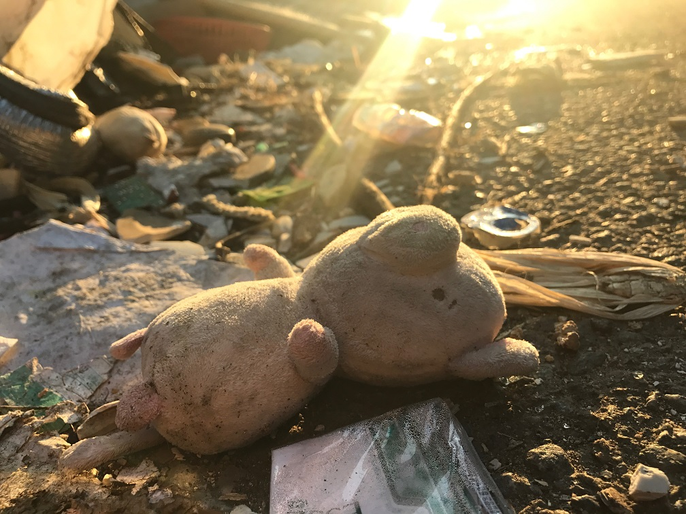
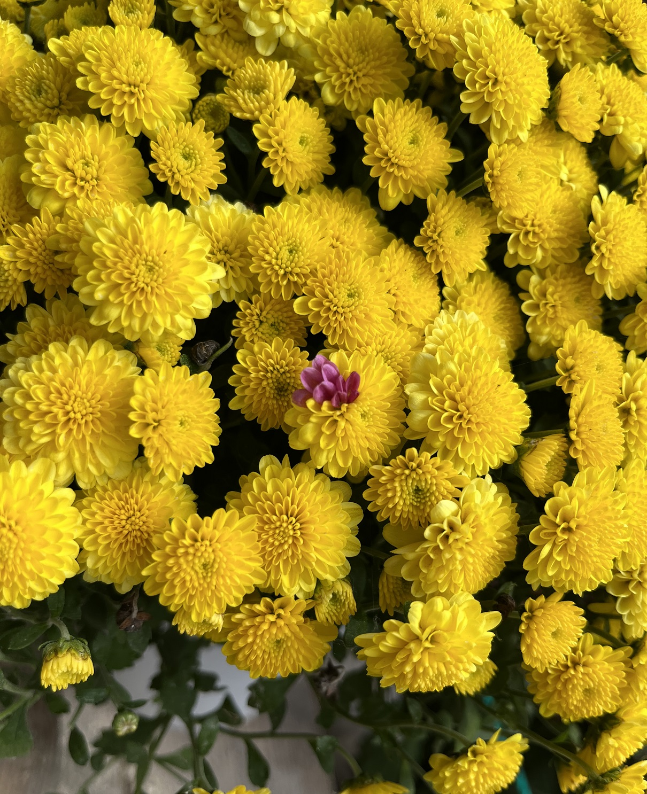
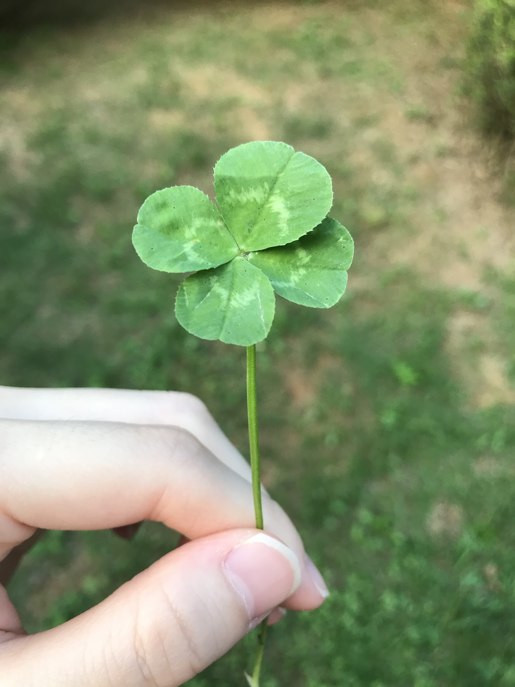
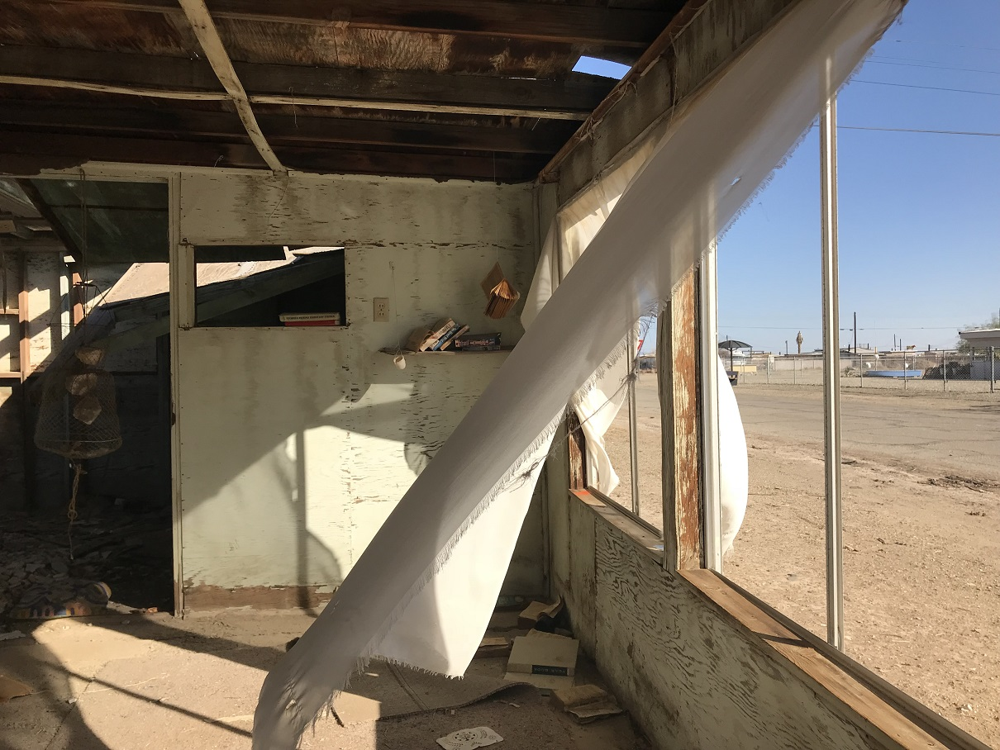
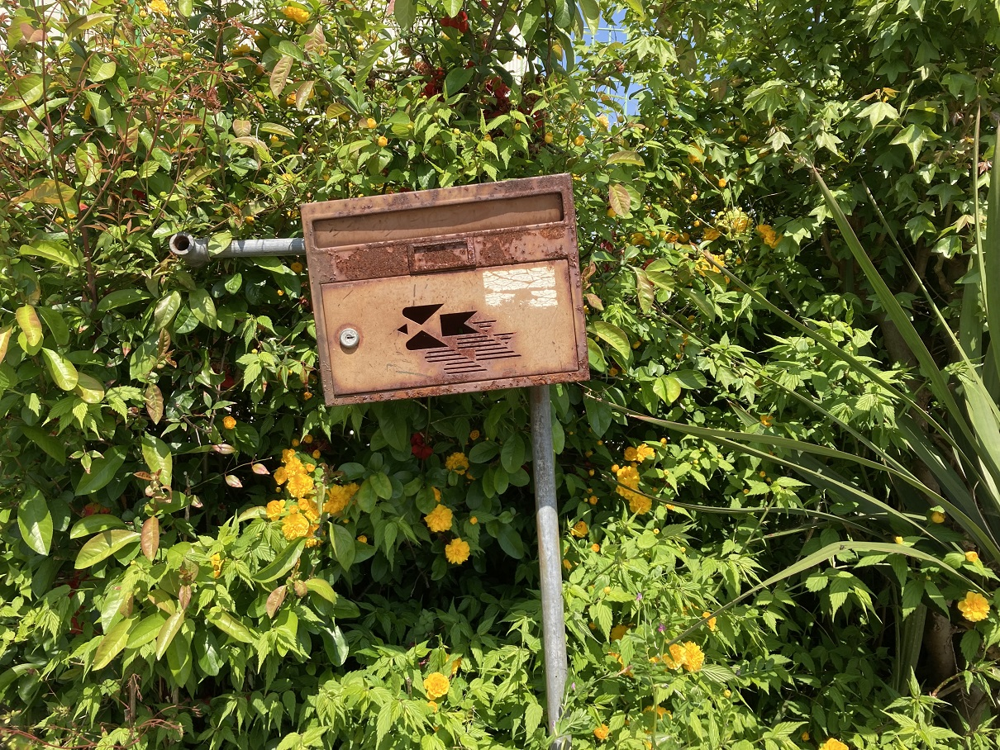
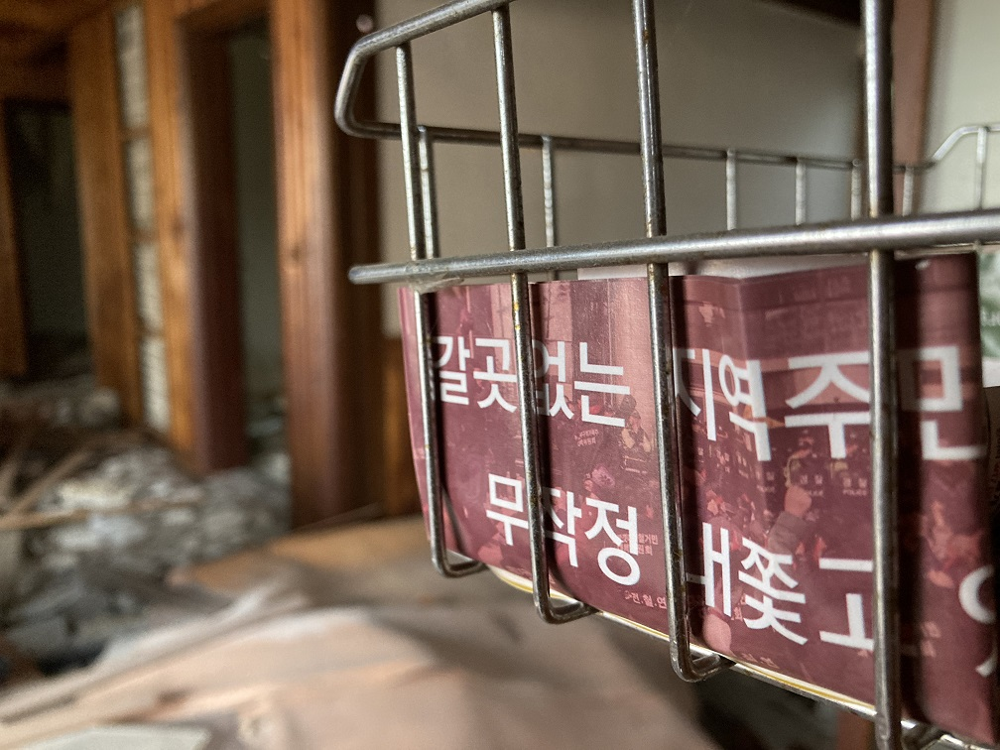
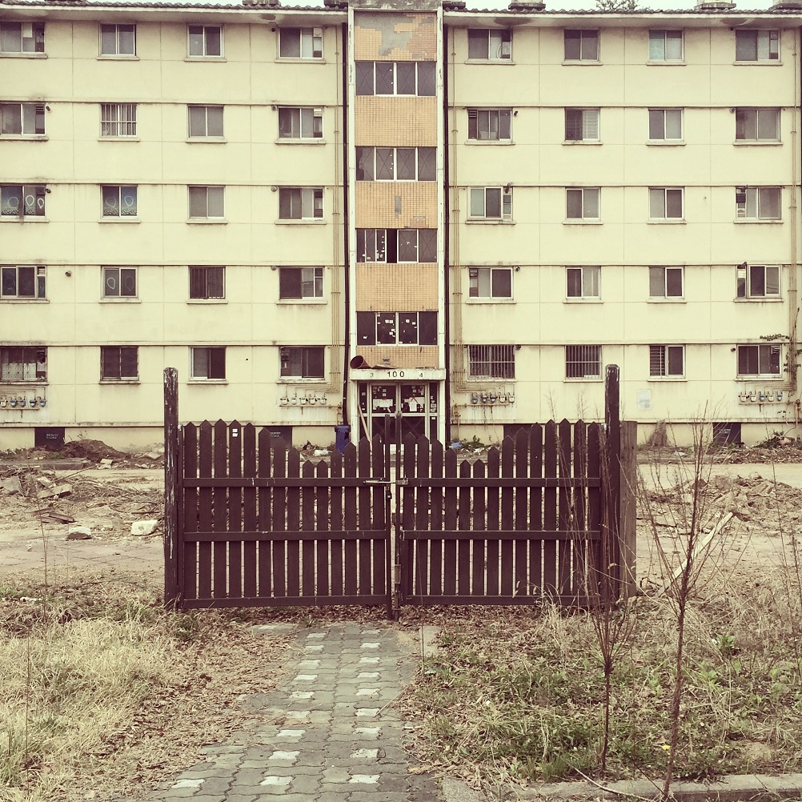

내가 찍은 베스트샷








전 개발 크리에이터가 되고 싶은 개발자 지망생이에요. 창작활동을 좋아해서 무엇이든 관심이 가면 창조해봅니다. 펠트인형도 만들어보고 간단한 미니게임도 개발해봤어요 :D 아직 살면서 많은 것을 이뤄보진 않았지만 인생을 길게 보고 제가 원하는 걸 하기 위해 노력하고 있어요.

하루아침에 잿더미로 변해버린 세계, 식량은 바닥났고 사람들은 서로가 서로를 두려워하며 죽이거나 죽는 상황에서 살아남은 아버지와 아들은 굶주림과 혹한을 피해 남쪽으로 길을 떠난다. 그곳이 무엇을 약속하는 땅인지는 알 수 없다. 그래도 가야 한다. 한순간도 쉽지 않다. 사람을 뜯어먹는 잔인한 무리를 만나는가 하면, 먹을 것이 풍부한 지하 대피소를 발견한다 해도 안전을 위해 곧 떠나야 한다. 무섭다며 자신의 품을 파고 드는 아들(코디 스미스 맥피) 때문에 아버지(비고 모텐슨)는 카트에 실린 약간의 물과 기름, 식량을 누군가에게 뺏기지 않을까 한 순간도 방심할 수 없다. 그들은 과연 따뜻한 남쪽 바닷가에 무사히 도착할 수 있을까?
제일 좋아하는 아포칼립스 영화예요. 볼 때마다 눈물을 쏟아요.

주간지 기자 아사카와 가즈유키는 한날한시에 심장마비로 사망한 네 남녀의 죽음에 공통점이 있으리라 직감한다. 그는 네 사람이 죽기 일주일 전에 한 별장에 함께 놀러 갔던 사실을 알아내어 직접 방문했다가 이상한 비디오테이프를 보게 된다. 비디오에는 의미를 알 수 없는 기묘한 장면이 이어지더니 “이 영상을 본 자는 일주일 뒤 이 시각에 죽을 운명”이라는 메시지가 나온다. 공포를 느낀 아사카와는 괴짜 천재인 고교 동창 류지를 찾아가 의논한다. 영상을 분석하던 두 사람은 과거 실종된 한 여성의 기이한 사연이 관련 있다는 사실을 알게 되는데……
링 원작은 SF입니다. 영화는 안 봐도 소설은 꼭 읽어보시는걸 추천드려요. 외전 포함 전권 제가 빌려드릴 수 있어요!